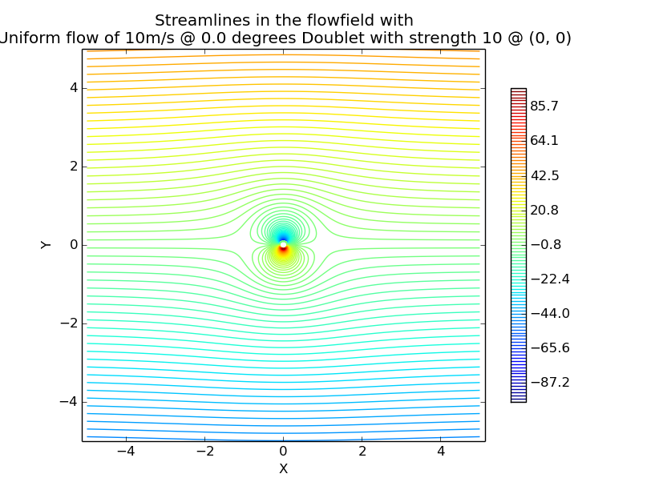
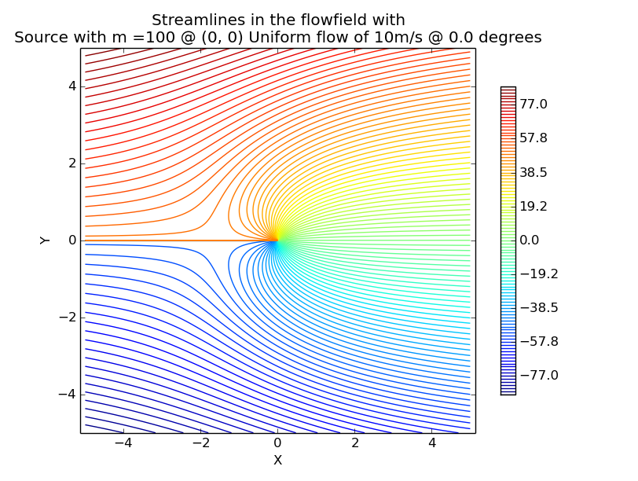

Potential flow
Hello, welcome to my website for plotting streamlines in the potential flow.
When flow is both frictionless and irrotational, pleasant things happen. by F.M. White

Example 1

Example 2

Example 3
You have to dream before your dreams can come true.
by A.P.J. Abdul Kalam